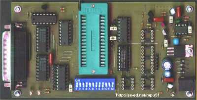
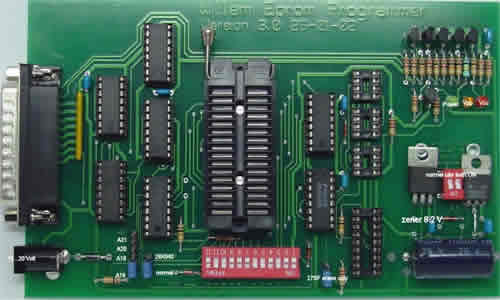
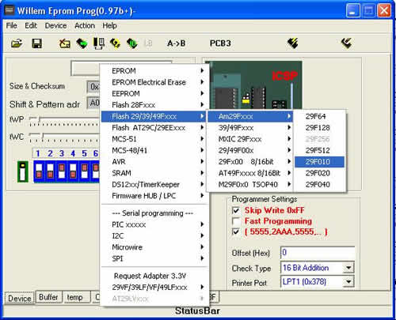
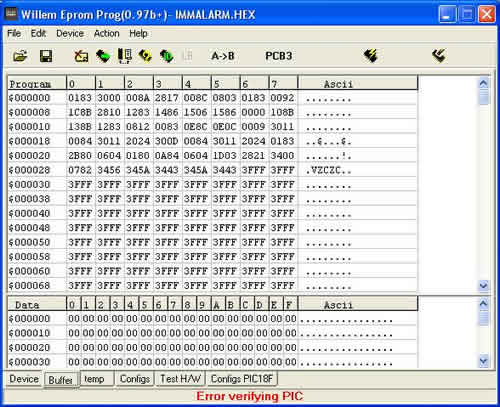

WILLEM EPROM PROGRAMMER

Version PCB3x
LE PROGRAMMATEUR:
Ce programmateur que l'on peut qualifier "d'universel" se connecte au port parallèle d'un PC.
Vous trouverez sur http://scorpius.spaceports.com/~mpu51/ eprom/eprom.html le programmateur (simple à construire) et, si vous n'avez pas la possibilité de le construire, vous pourrez également acheter le kit du Willem EPROM Programmer sur http://www.willem.org : La photo ci-dessous montre l'excellente qualité de réalisation du circuit imprimé et ce, pour un prix modeste.

Kit Willem V.3.0Le programmateur programme rien de moins que les EPROM,EEPROM,FLASH,I2C,PIC,MCS-51,AVR, 93Cxx, ISP (avec pour certaines mémoires l'ajout d'une interface entre le programmateur et le composant à programmer).
Le fichier pcb3bw.pdf représente le typon simple face de la version PCB3x du programmateur tous les autres schémas et typons sont à télécharger sur http://scorpius.spaceports.com/~mpu51/eprom/eprom.html
LE SOFT:
La dernière version du soft (0.97g le 1/02/03) est téléchargeable sur http://www.willem.org
Le programme est remarquablement bien fait et la prise en main s'effectue en quelques minutes. Après l'avoir ouvert, on sélectionne le type de composant à programmer. Une fenêtre, représentant le programmateur (PCB3 ou Willem), rappelle dans quel support insérer la mémoire ainsi que la position des switchs DIL. Il ne reste plus qu'à charger le programme et à configurer ce qui doit l'être.

Vue de la fenêtre "Onglet Device"
Vue de la fenêtre "Onglet Buffer"